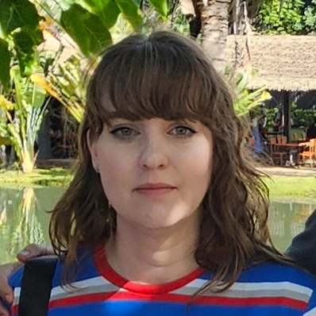

Home
About Me
My name is Kristin Lindberg. I am currently studying the Software Development Program at BYU Pathway. I live in Eagle Mountain, UT. I am married with two kids, a boy who is 14, and a girl who is 12. I enjoy playing board games, card games, and video games. I also enjoy reading and watching movies. I have a dog named Minnie, she is half Boston Terrier and half French Bulldog.
Student Photo

Web Certificate Courses
The total credits for the course(s) listed above is .